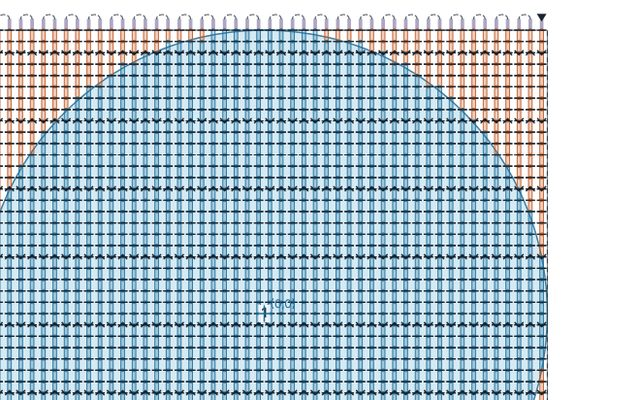
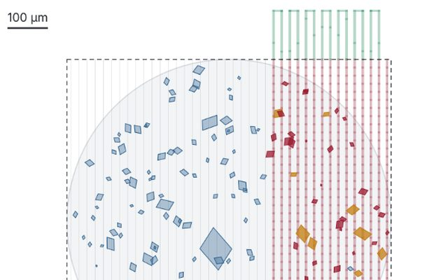
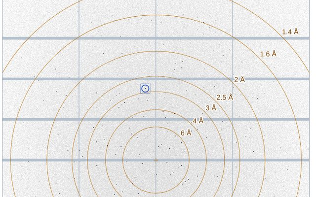
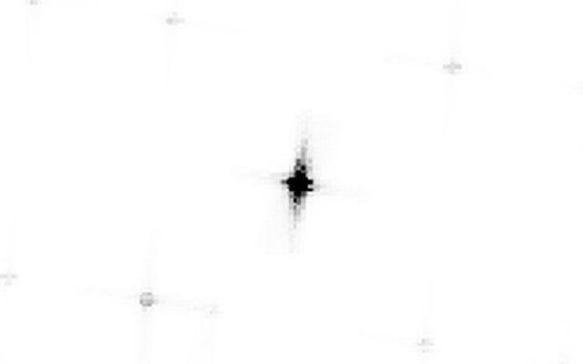
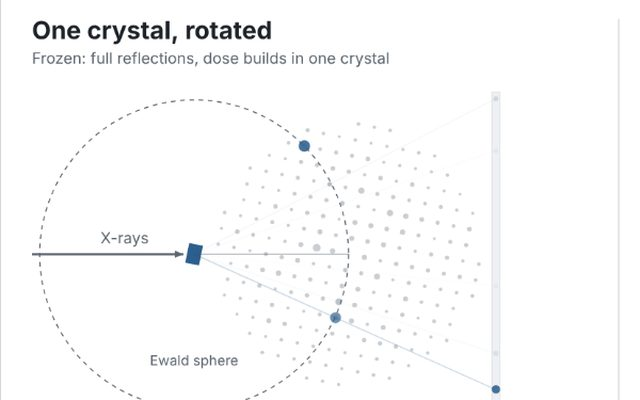
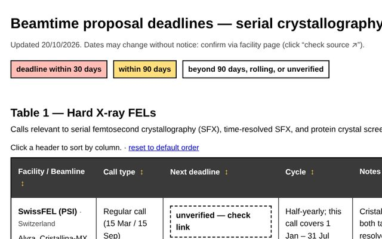

We develop X-ray crystallography technologies at the frontier of what's possible, capturing biochemical reactions in real time, at atomic resolution under physiological conditions. Our goal is to reveal protein structures and dynamics that are inaccessible with conventional approaches, to drive drug discovery, understand fundamental structural biology and advance materials science.

SSX in plates scan planningMX3 SSX scan planner
SSX scan simulationsFly scan in the drop
Diffraction simulations: nanoBraggBragg spot intensity explorer: cubic insulin on EIGER2 XE 16M
Nanocrystal diffraction explorerCubic insulin, 5 µm to 200 nm
Education: demosSerial crystallography figures: SCANZ 2026
Beamtime proposal deadlinesXFEL and synchrotron calls for serial crystallographyDeveloping time-resolved serial crystallography at physiological temperature as a practical tool for drug discovery, applied to antimicrobial resistance.
ARC Future FellowshipA new crystallographic technique to determine atomic structures from nanocrystals at synchrotrons, based on fluctuation X-ray scattering.
ARC Discovery Project DP250100311, 2026-2028Leading the inaugural Collaborative Access Program on method development for macromolecular crystallography at the Australian Synchrotron (MX3 and MX2), building serial and time-resolved crystallography capability for the Australian structural biology community.
Mapping the fundamental physical limits of serial femtosecond crystallography through theoretical modelling of ultrafast X-ray-matter interactions, to define the ultimate reach of XFEL-based imaging.
Structural determination of Sphingosine-1-phosphate (S1P) lyase in complex with two novel inhibitors, for structure-based drug development.
Barbara Dicker Brain Sciences Foundation, 2026-2028DatView, SPIND and contributions to CrystFEL. All our software and scripting is open-source.
We offer interdisciplinary research projects at PhD, Masters and undergraduate level. For PhD applicants, we can support applications for RTP or SUPRA scholarships (Swinburne PhD scholarships for high-achieving students) and other scholarship schemes.